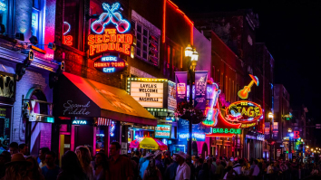
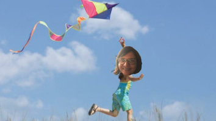
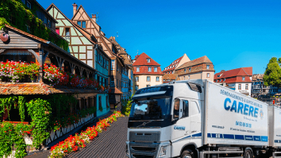

Enfance à Nashville
Je suis néé à l’âge de 3 ans dans l’Oregon et j’ai ensuite déménagé dans l’Ohio lorsque j’ai soufflé mes 5 bougies. J’ai ensuite grandi dans cette même région à Nashville, pas très loin de Killbuck avec mes deux parents, mon grand frère, ma petite soeur, et mon chien Enzo.
Mon enfance
Petite, j’adorais faire des courses de cerf-volants et c’est une passion que j’ai toujours gardée et qui m’est d’une grande utilité aujourd’hui. A 8 ans, je finis ma croissance et atteins ma taille définitive qui est de 2m43.
Ma performance aux JO d’Athènes
A 15 ans, j’ai découvert la natation synchronisée australienne et je suis tout de suite tombée très amoureuse de cette discipline ce qui m’a permis d’être médaillée olympique à Athènes en 2004.
Mon arrivée à Strasbourg
5 ans après, je déménage définitivement en Alsace où je découvre la schtro, le munster, le kougelhof ainsi que les essuies glaces arrières dans les voitures. C’est alors que je fais la connaissance du GOAT, Christophe Collet, qui me trouve un poste à temps plein au centre de langues.
